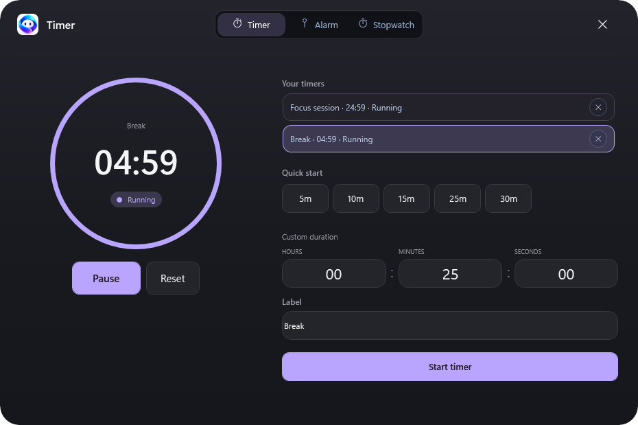

Product announcement
Introducing Sutra Island for Windows
A small, always-on-top space for what’s happening on your PC.

Today I’m introducing Sutra Island, a free, open-source app for Windows. It sits along the top edge of your screen and gives you a place to check what’s playing, control your audio, keep an eye on a timer, or dictate into the app you’re already using.
I wanted a place for the things that are active right now but don’t need a whole window. A timer is useful because you can glance at it without opening the clock. Skipping a track shouldn’t mean finding the app that’s playing it. That’s the idea behind Island: keep a few things visible, and make their controls easy to reach.
The Island changes with what you’re doing
When music is playing, you can see the track and open the Island to get to playback, volume, and audio output. When you’re timing something, you can pin the countdown and keep working. You decide which activities the compact Island shows.

The area is useful for things you’re about to do, too. Drop a screenshot into the Drop Tray, switch to the app where you need it, and drag it back out. Save a line in Quick Capture before you forget it. Use Ctrl + Alt + K to open the command palette if you’d rather type what you need, whether that’s “open Bluetooth settings” or “12 inches to feet.”
From a thought to a sentence
Sutra Flow is the feature I’d try first. Put your cursor in a text field, hold Right Ctrl, and say what you want to write. The Island turns into a grid of dots that moves with your voice. Let go and Flow transcribes what you said and puts the text at your cursor. If it can’t verify the original field, it gives you the text to copy instead.
Flow transcribes with Whisper on your PC. Basic cleanup runs locally, too. If you enable AI cleanup, the provider you choose receives the transcript, not the audio.
There’s also Sutra Assistant for questions that need a longer back-and-forth. You choose which provider to use. Regular chat doesn’t capture your screen; you can ask it to use screen context when that would help.
Available for Windows
Download Sutra Island for 64-bit Windows 10 (version 1809 or later) or Windows 11. The source is on GitHub.
Try it alongside whatever you already do on your PC. Start a timer, change a song, or dictate the next line you were going to type. The best test is whether you reach for it again tomorrow.
Sutra Island is one of the products I’m building under Sutra. More on the rest of the lineup later.